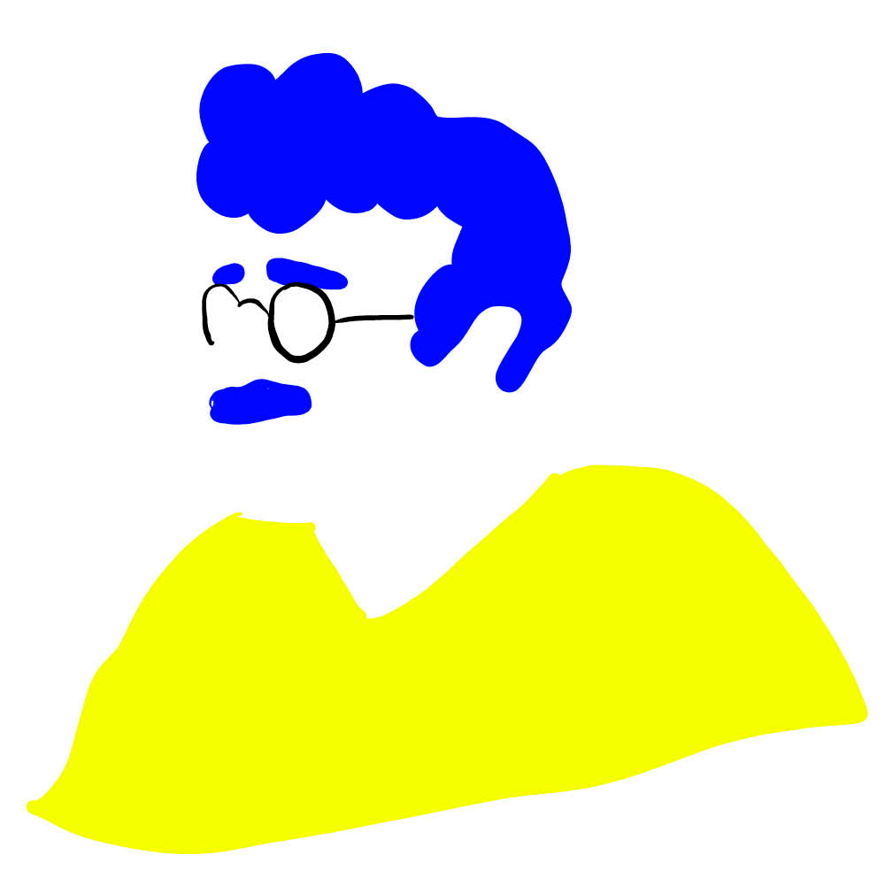

Mots Dits Mots Lus est la journée sidérale de la lecture à haute voix.
Tout le monde peut participer, partout dans le monde.
La sixième édition est le samedi 26 juin 2021 !
C'est quoi ?
Mots dits Mots lus vous invite à lire à voix haute ou à écouter des lectures le samedi 26 juin 2021.
- Pour partager des textes que vous aimez.
- Vous pouvez ouvrir vos lectures à tout le monde.
- Vous pouvez aussi choisir vos invités.
- Ou vous pouvez simplement écouter.
Mots dits mots lus c'est :
- Lire avec plaisir.
- Dans toutes les langues.
- Pour tous.
- Par tous.
- Partout.
- Et avec tous !
C'est pour qui ?
Mots dits mots lus c'est pour tout le monde :
- Les personnes qui veulent lire à voix haute.
- Les personnes et les structures qui veulent organiser un événement de lecture.
- Les personnes qui veulent écouter des lectures à voix hautes.
Comment ça marche ?
Cliquez sur le bouton Je lis je m'inscris.
Pour vous inscrire, remplissez le questionnaire.
Vous pouvez indiquer :
- L'heure et le lieu de la lecture.
- Le texte qui sera lu.
- La langue.
- Qui est le lecteur.
Validez votre inscription.
Votre événement apparaîtra alors sur la carte du site internet. Nous ferons ensuite connaître votre événement sur notre page Facebook. Vous recevrez des affiches, des marques-pages et des autocollants Mots dits mots lus pour faire connaître votre événement chez vous. Vous pouvez aussi télécharger l'affiche et les logos sur le site internet.
Mots dits Mots lus est un événement entièrement gratuit.
L'inscription est gratuite ainsi que toutes les lectures proposées.
Vous voulez écouter des lectures à voix haute ?
Cliquez sur Programme
La carte qui s'affiche vous indique toutes les lectures qui ont lieu. Vous pouvez choisir où vous voulez aller...
